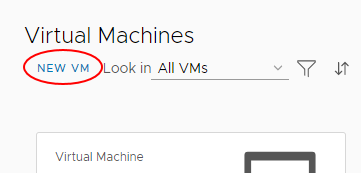
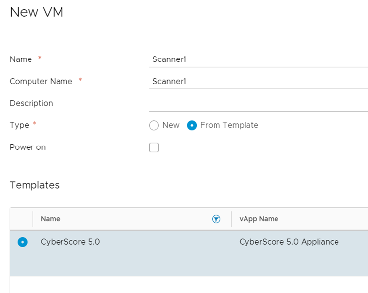
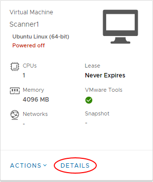
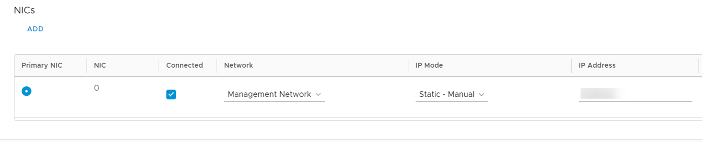
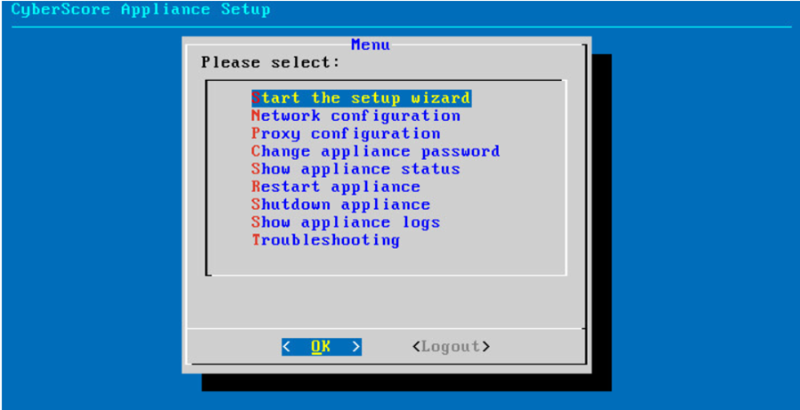
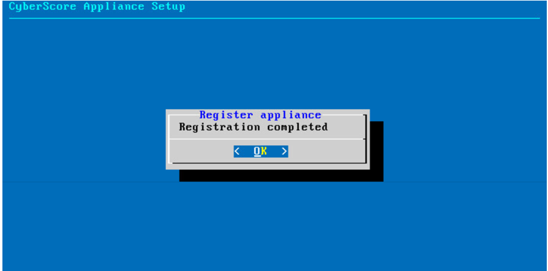

How to deploy a CyberScore virtual machine in vCloud Director
Overview
To run CyberScore against your UKCloud for VMware environment, you need to deploy a virtual machine (VM) and set it up as a CyberScore scanner.
Prerequisites
Before completing the steps in this article, make sure you have set up your environment as described in XQ Cyber CyberScore scanner deployment environment requirements.
Deploying a CyberScore virtual machine
In the vCloud Director Virtual Datacenters dashboard, select the virtual data centre (VDC) in which you want to create the VM.
For more detailed steps for accessing vCloud Director, see the Getting Started Guide for UKCloud for VMware.
In the left navigation panel, select Virtual Machines.

Click New VM.

In the New VM dialog box, enter a Name, Computer Name and Description for the VM.
Note
Name is a name to identify the VM, Computer Name is the host name of the VM.
The Computer Name is copied from the Name field but can contain only alphanumeric characters and hyphens, so you may need to edit it if your VM Name contains spaces or special characters.
From the Type radio buttons, select From Template.
Deselect the Power on check box.
In the Templates section, select the CyberScore 5.0 template.
Tip
To find the template, click the filter icon (funnel) in the Name column and enter
CyberScore.
When you're done, click OK.
When the CyberScore VM deployment is finished and the VM shows a status of Powered Off, in the card for the VM, select Details.

Expand the Hardware section.
In the NICs section, from the Network list, select the network that you want to attach the VM to.
From the IP Mode list, select Manual then enter the IP Address for the VM.
Select the Connected check box, then click Save.

In the card for the VM, select Actions then Power On.
When the VM has powered on, in the card for the VM, select Actions, then Launch Web Console.
In the Web Console, after logging in to the VM, select Start the setup wizard.

When the setup process is finished, make a note of your 16 digit registration code.
Log in to the CyberScore Portal and register your scanner using your 16 digit registration code.
Back in the vCloud Director Web Console, you'll see a message that your registration is completed.

Close the Web Console.
You can now configure and run scans from the CyberScore Portal.
Feedback
If you find an issue with this article, click Improve this Doc to suggest a change. If you have an idea for how we could improve any of our services, visit the Ideas section of the UKCloud Community.